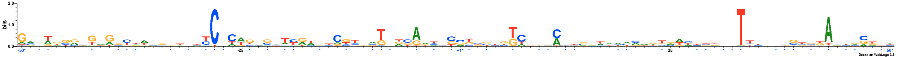

MODEL
Lambda: 1.0
Dataset structure: 800 sequences with 100 features
Number of architectures in the best model: 11
Likelihood of best model: -94621.2085971
Architecture 1: 47 sequences with 60 important features
Sequence logo for the important positions in architecture 1
Architecture 2: 51 sequences with 61 important features
Sequence logo for the important positions in architecture 2
Architecture 3: 76 sequences with 51 important features
Sequence logo for the important positions in architecture 3
Architecture 4: 9 sequences with 62 important features
Sequence logo for the important positions in architecture 4
Architecture 5: 41 sequences with 61 important features
Sequence logo for the important positions in architecture 5
Architecture 6: 88 sequences with 60 important features
Sequence logo for the important positions in architecture 6
Architecture 7: 53 sequences with 66 important features
Sequence logo for the important positions in architecture 7
Architecture 8: 120 sequences with 49 important features
Sequence logo for the important positions in architecture 8

Architecture 9: 93 sequences with 54 important features
Sequence logo for the important positions in architecture 9
Architecture 10: 208 sequences with 52 important features
Sequence logo for the important positions in architecture 10

Architecture 11: 14 sequences with 57 important features
Sequence logo for the important positions in architecture 11
NOTE: All important positions in the logos are followed by an asterisk symbol and are coloured blue